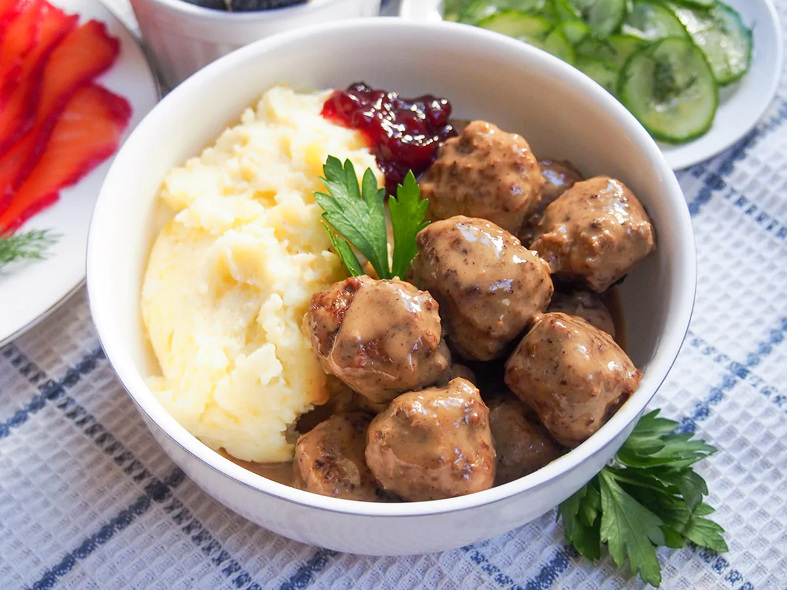

Swedish Meatballs Recipe
Preparation Time: 40 minutes

Ingredients
- ¼ cup fresh breadcrumbs
- ¼ cup heavy cream
- ½ onion
- 1 tablespoon butter
- ½ lb ground pork
- ½ lb ground beef
Instructions
-
Place the breadcrumbs in a small bowl or other dish and pour over the
cream. Set aside.
-
Finely dice the onion and warm the butter in a small skillet/frying pan
over a medium heat. Add the onion and cook for a couple minutes until
the onion is softened and translucent without browning. Remove from heat
and let cool slightly.
-
Place both the round pork and beef in a bowl and add the soaked
breadcrumbs (along with any excess cream), the cooked onion, egg, salt,
pepper and allspice. Mix everything together so that it is all evenly
distributed, but try to be light with your mixing so you don't compress
it too much. Using your hands or a food processor can help.
-
Take tablespoonfuls of the meatball mixture and place on a baking sheet
or plate. Don't roll them at this stage, it's easier to roll all at once
after. Once you have scooped all of the mixture, set a small bowl of
cold water beside you. Dip your hands in the water and then roll the
meatballs, dipping again as needed (the water helps them not stick to
your hands).
-
Warm the oil in a wide skillet/frying pan or braiser over a medium heat.
Cook the meatballs in batches, so you don't over-crowd the skillet,
turning regularly as they brown to cook on all sides. Remove the
meatballs once browned all over and cook the next batch. If needed, add
a little extra oil for later batches but you will probably have enough
fat come out of the meatballs.
-
Once all of the meatballs are cooked, add the flour to the skillet to
absorb the excess fat and stir. Add the stock and stir, scraping any
browning from the bottom of the skillet (it adds flavor) and getting rid
of lumps. Mix in the soy sauce and allow the sauce to thicken slightly,
reducing the heat to let it simmer, as needed.
-
Depending on the texture of the sauce and any lumps of browning, you may
at this stage want to pour the sauce through a sieve to get rid of any
lumps. Then, return to the skillet and add the cream over a low heat.
You ideally don't want it to boil after adding the cream, just be warm.
Add back the meatballs and stir them through the sauce. Cook for another
minute or two to warm them through then serve.